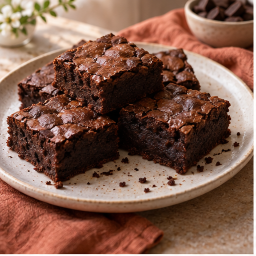
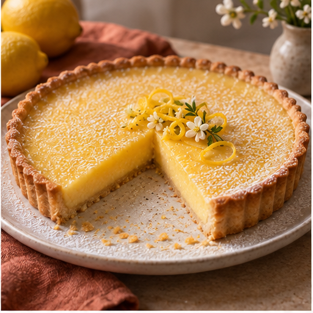
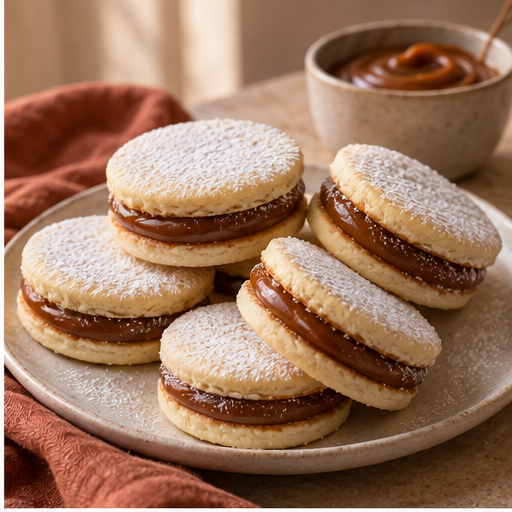
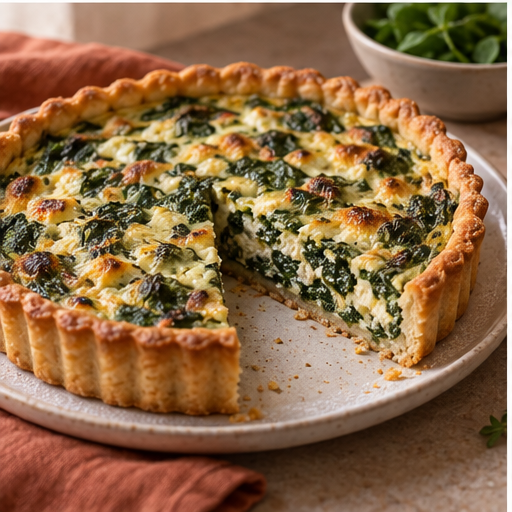
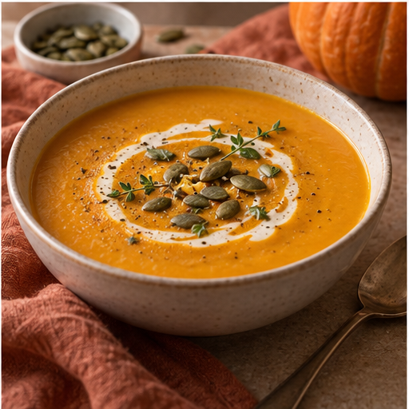
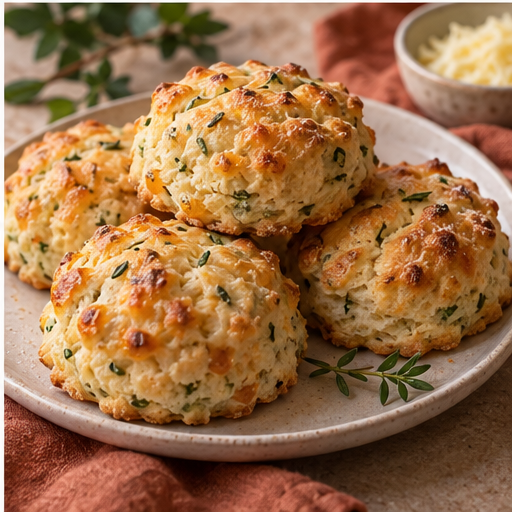

Recetario casero
Cocinar rico también puede ser simple.
Seis recetas explicadas paso a paso para llenar la mesa de algo dulce, salado y hecho con cariño.
Elegí tu antojo
Catálogo de recetas
Seleccioná una categoría para ver solo las recetas que te interesan.





Detrás del recetario
Hola, soy Angie
Mantengo este pequeño rincón para compartir recetas caseras, claras y posibles. Me gusta que cada preparación tenga instrucciones sencillas y un resultado que invite a sentarse a la mesa.
¿Hablamos?
Información de contacto
Podés enviar una consulta, sugerir una receta o contarme cómo te salió.